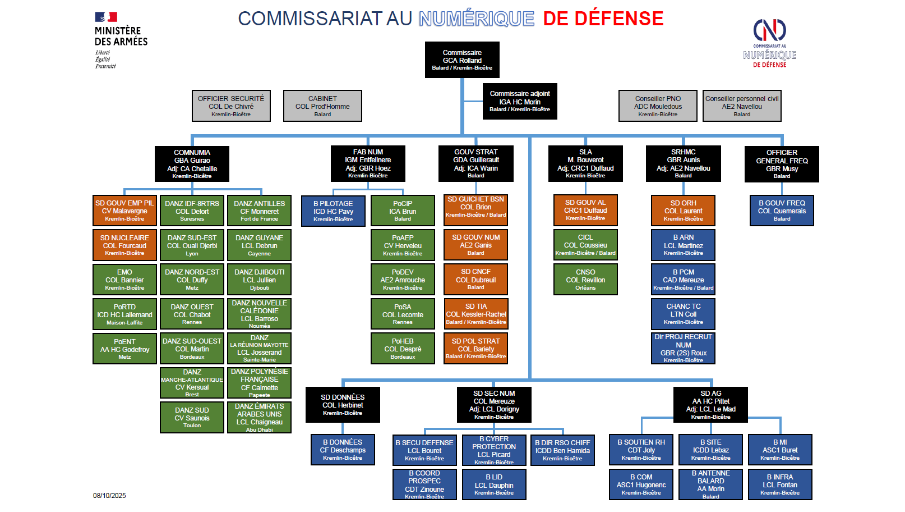
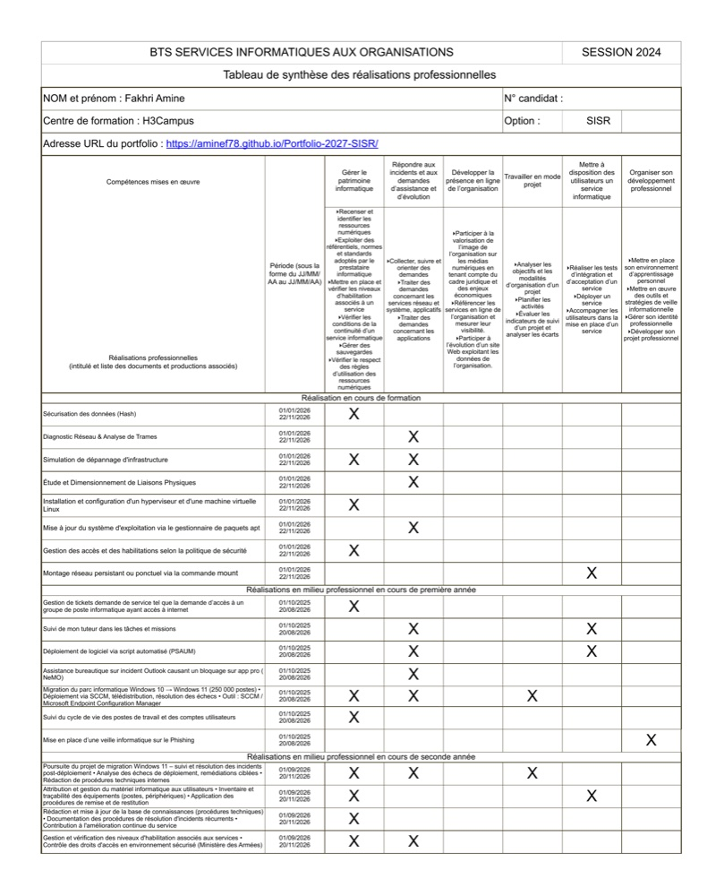

Amine Fakhri.
BTS SIO — OPTION SISR
Administration des systèmes et des réseaux.
Support informatique · Infrastructure · Cybersécurité.
H3 Campus Poissy • Alternance en cours · MINARM • Ministère des Armées
Sommaire de la présentation
Voici les grandes étapes de mon oral.
Mon parcours
Formations et expériences professionnelles.
Mon environnement professionnel
Le CND, le CNAD et mes missions de support.
Migration vers Windows 11
Le traitement des incidents d’échec de mise à jour.
L’hameçonnage
Un sujet de cybersécurité et ma méthode de veille.
Tableau de synthèse E4
Mes réalisations et les compétences associées.
Mon parcours : formations et expériences
Du plus récent au plus ancien · le BTS SIO et l’alternance au MINARM se poursuivent en parallèle.
-
ALTERNANCE · EN COURS
MINARM · CND / CNAD
Technicien helpdesk en alternance · support à distance des utilisateurs.
-
FORMATION · EN COURS
BTS SIO · option SISR
H3Campus Poissy · systèmes et réseaux.
-
→EXPÉRIENCE
Helpline · Technicien Help Desk
Support utilisateurs Windows 10/11 pour le client Wavestone à La Défense, gestion des demandes dans ServiceNow et escalade des incidents.
-
→EXPÉRIENCE
WHPC · Technicien Help Desk
Assistance Windows et applications métiers, tickets GLPI, maintenance des équipements.
-
→EXPÉRIENCE · STAGE
Digitalcook · Technicien Help Desk
Support N1/N2 Windows, configuration des postes, accès AD / Office 365 et documentation.
-
→FORMATION
Bootcamp informatique
START ZUP.
-
→FORMATION · 1RE ANNÉE
BUT Techniques de commercialisation (TC)
IUT de Mantes.
-
→FORMATION
Baccalauréat STMG · option Marketing
Lycée L.Sedar Senghor.
Mon organisation : MINARM · CND · CNAD
Le Centre national d’appui à distance (CNAD) est au sein du Commissariat au numérique de défense (CND). J’y suis technicien helpdesk en alternance.
Défense et secteur public
Un environnement institutionnel exigeant, avec des priorités fortes pour les systèmes d’information.
Une prise en charge par périmètre
- Plateau 1 : Paris intra-muros, VIP/VOP et THA.
- Plateau 2 : téléphonie et bases marines.
- Plateau 3 : bases aériennes et Paris extra-muros.
Back-office : demandes nécessitant une expertise complémentaire.

Organigramme du Commissariat au numérique de défense
Version du 08/10/2025 · vue d’ensemble · cliquer pour replier
+
Maintenir les services informatiques.
Respecter les règles de sécurité.
Accompagner les utilisateurs.
Mon environnement technique
Les principales technologies et solutions rencontrées dans mes activités professionnelles.
Active Directory
Gestion des comptes, des accès et des environnements de domaine.
IDENTITÉS / ANNUAIREMECM
Gestion des postes, déploiements applicatifs et séquences de tâches.
GESTION DE PARCServiceNow
Enregistrement, suivi et traçabilité des demandes et incidents.
ITSM / SUPPORTPSAUM
Supervision et suivi des opérations de déploiement selon les procédures utilisées.
MONITORINGPrise en main à distance
Diagnostic et assistance à distance sur les postes utilisateurs.
SUPPORTWindows
Diagnostic des postes, services et environnements utilisateurs.
SYSTÈMESOutils mentionnés à titre professionnel ; aucun identifiant, nom de serveur ou élément d’architecture sensible n’est présenté.
Organisation du support informatique
Une méthode structurée pour garantir un traitement efficace et traçable des incidents.
Réception
Appel, mail ou formulaire. Création du ticket dans ServiceNow.
Qualification
Identification du problème, du contexte, de l'urgence et de l'impact.
Diagnostic
Analyse technique, tests, assistance et recherche de solution.
Résolution
Correction, validation avec l'utilisateur et clôture du ticket.
Escalade vers le Back-Office
Lorsque l'incident dépasse le périmètre d'intervention, il est transmis au niveau de support compétent avec les éléments de diagnostic disponibles.
Projet 01 — Migration vers Windows 11
Migration Windows 11
Traiter les incidents signalant l’échec d’une mise à jour vers Windows 11 : analyser les journaux, relancer la séquence selon la procédure, puis confirmer le résultat avec l’utilisateur.
Comprendre l’échec
Je reçois un ticket signalant qu’une mise à jour vers Windows 11 a échoué sur un poste. Je consulte les journaux pour identifier la cause, par exemple un espace de stockage insuffisant ou un poste éteint pendant la mise à jour.
Appliquer la procédure
Lorsque la cause est identifiée et que la procédure le prévoit, je relance la séquence de tâches d’installation de Windows 11. Je suis les étapes de traitement prévues pour ce type d’échec.
Vérifier avec l’utilisateur
Je confirme avec l’utilisateur que Windows 11 est bien installé. Si la mise à jour échoue encore, je transmets le ticket aux techniciens de proximité, qui poursuivent les manipulations selon leurs procédures.
Une mise à jour validée avec l’utilisateur ou un ticket transmis aux techniciens de proximité avec le diagnostic réalisé.
Veille — Reconnaître un courriel frauduleux
Je repère les sujets sur les forums, notamment Reddit, et grâce à un flux RSS ; je vérifie ensuite les informations avec des sources officielles.
Un faux courriel qui pousse à agir
L’hameçonnage (phishing) imite un organisme ou une personne de confiance pour inciter à cliquer, ouvrir une pièce jointe ou donner un mot de passe.
3 INDICES À VÉRIFIERUrgence, menace de blocage ou demande inhabituelle.
Le nom de domaine ne correspond pas clairement à l’organisme annoncé.
Le message demande d’ouvrir un fichier ou de saisir ses identifiants sans raison attendue.
Un indice isolé ne prouve pas une fraude : il doit conduire à vérifier le message.
Ne pas cliquer, vérifier, signaler
- Ne pas cliquer sur le lien, ouvrir la pièce jointe ni répondre au message.
- Vérifier la demande par un canal officiel, sans utiliser le lien reçu.
- Signaler le message au support informatique selon la procédure de l’organisation.
- Si un mot de passe a été transmis, prévenir le support et le changer depuis le site officiel.
Compétences du BTS SIO SISR
Je présente ici mon tableau de synthèse E4 dans son format original.

Tableau de synthèse des compétences
Le tableau complet est disponible en grand format. Tu peux aussi télécharger le fichier Numbers original.
Construire.
Administrer.
Sécuriser.
Mon bilan professionnel.
Ces expériences m'ont permis de développer mes compétences techniques, ma rigueur et ma capacité à intervenir dans des environnements informatiques exigeants.
Merci pour votre attention.
Je suis maintenant disponible pour répondre à vos questions.